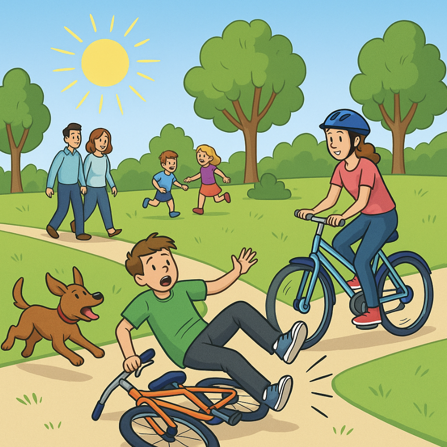

Instructions:
Look at the picture and describe what was happening using Past Simple and Past Continuous.
Try to use both tenses in your description.

Hint:
Remember:
- Past Simple: for completed actions in the past
- Past Continuous: for actions in progress at a specific time in the past